Work
Not just interfaces...
My work lives at the intersection of design and engineering. The pattern has always been the same: step in before the product has shape, and help teams make design decisions before they become technical debt.
It's not just about the layer the user sees. The real work is what no one sees: tokens, component architecture, the semantic layer that survives the next framework migration.
"I design systems, not just interfaces."
-
Product systems and design foundations.
-
Design systems as operational layers.
-

Interfaces for complex technical environment.
-

Human-centered AI and developer tooling.
Projects
Box Model Sentinel
VS Code Extension · CSS Analysis · Responsive Tool
Your CSS looks right until you open it on another device. Box Model Sentinel monitors in real time and catches what you don't see: hidden fixed pixels, rigid flex containers, silent overflow. The kind of bug that only shows up during the demo.
Underlith
Open Source · Design Tokens · Semantic layer
Design tokens that don't die with the next framework. Underlith is a semantic layer between design intent and implementation, platform-agnostic, built to outlive the next migration of your stack.
OfferEye
Palm Pre · Visual Search · Price Comparison
Visual search and price comparison app for Palm Pre — 8 years before Google Lens existed. Detected products from photos and compared prices in real time across major retailers.
- Free Alchemy API access for the innovative use case
- One of the first visual search apps for smartphones
- Anticipated the visual commerce trend by 8+ years
- Built for Palm Pre / webOS
Vitrine Responsiva
BuscaPé Affiliate · ML · Adaptive Layout
Adaptive widget with ML‑driven personalization — 4 years before responsive became standard. Adapted layout to device and available space, and personalized recommendations from user history.
- Adaptive layout that predates CSS Grid/Flexbox
- Custom ML engine (Java) for recommendations
- Embeddable widget for third‑party sites
- Real‑time price updates via BuscaPé API
Let's build something that scales.
Available for systems design projects, product architecture consulting, and collaborations
on complex
technical products.